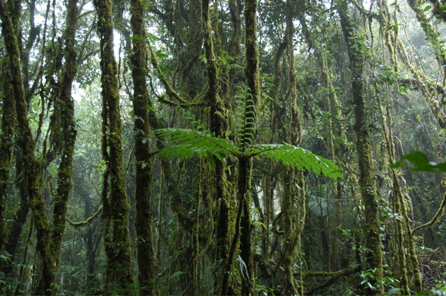
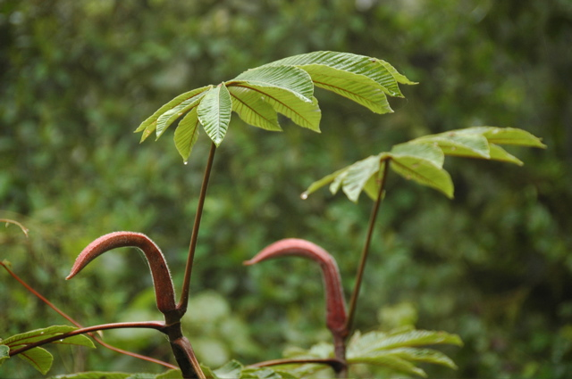
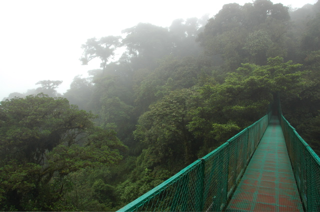
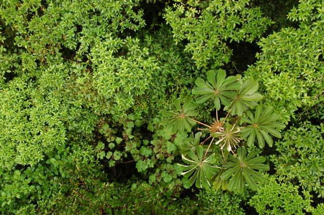
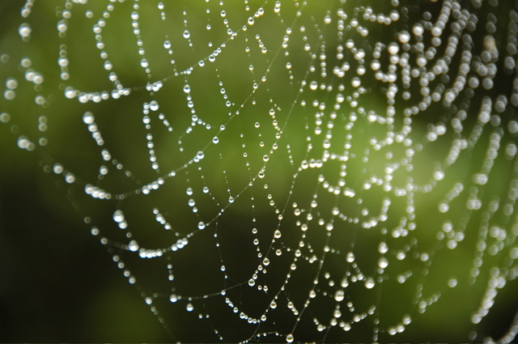
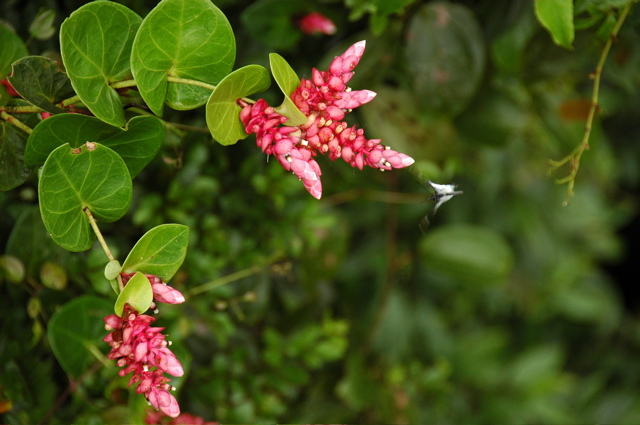

Die Fahrt von La Fortuna nach Santa Elena war sehr abwechslungsreich. Von einem Bus wurden wir zum Ufer des Arenal-Sees gebracht. Dort ging es mit einem Boot im Tretboot-Tempo weiter - die “Abkürzung” über den See. Auf der anderen Seite hat uns das Boot an einem unbewohnten Ufer rausgelassen. Wir mussten dann nur noch über einen Stacheldrahtzaun klettern, um zu den weiterführenden Bussen zu kommen. Die folgende Strecke nach Sta. Elena führte uns mitten in die Cordillera de Tileran. Die Strecke war sehr bergig und sehr schlammig. Nachdem der Wagen vor uns auch nach vier Anläufen eine steile Stelle nicht erklimmen konnte, mussten wir alle aussteigen und ein Stück laufen. Dann ging es aber glücklicherweise.
Sta. Elena selbst ist ein kleines Kaff in den Bergen, das mehr Hotels als Einwohner hat. Die Anziehungskraft geht von den Nationalparks Sta. Elena und Monteverde aus, die sich hier befinden. Beides sind sehr schöne Nebelwälder.
 
Heute haben wir uns den ersten davon vorgenommen und sind dabei wieder ordentlich durchnässt worden. Gut, dass man auch hier Gummistiefel leihen kann! Eine weitere Strecke im Wald des Unternehmens Salvatura führte über acht große Hängebrücken durch den Urwald. Von dort aus konnten wir auch die höher gelegenen Baumschichten ansehen. Die endlosen von Baumkronen vollständig bedeckten Hügel boten ein fantastisches Bild.
 
Morgen müssen wir unsere Unterkunft Arco Iris leider verlassen, weil sie sich bei der Reservierung vertan haben. Das Zimmer war sehr geräumig und sogar mit Kühlschrank ausgestattet, so dass wir uns teilweise selbst verpflegen konnten. Wir bleiben aber noch einen weiteren Tag hier, um auch den anderen Park im benachbarten Monteverde zu bewandern.
 